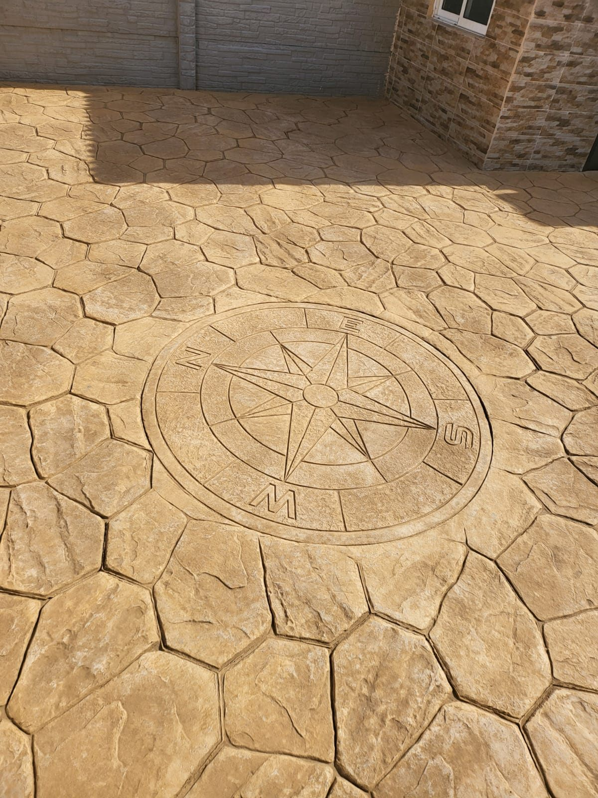
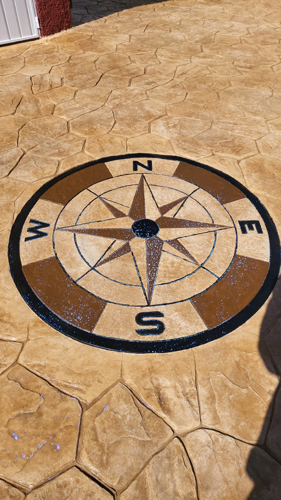

Color apagado
Pérdida de intensidad, aspecto blanquecino o diferencias de tono por desgaste.
Renovación de pavimentos
Recuperamos superficies desgastadas, con pérdida de color o protección deteriorada desde Alcalá de Henares para Madrid y el Corredor del Henares.

Antes de rehacer el pavimento
El sol, el tránsito, la humedad y el desgaste de la protección pueden apagar el color y dejar el pavimento expuesto.
Revisamos el estado de la superficie, las juntas, las grietas y el sellado anterior para recomendar únicamente el tratamiento necesario. No todos los pavimentos necesitan la misma resina ni se pueden resolver con una simple capa superficial.
Enviar fotos por WhatsApp →Señales habituales
Pérdida de intensidad, aspecto blanquecino o diferencias de tono por desgaste.
Protección irregular, zonas sin brillo o resina antigua en mal estado.
Daños localizados que deben revisarse antes de aplicar cualquier acabado.
Manchas, verdín y acumulación que requieren una limpieza adecuada al soporte.
Trabajo real
El tratamiento se decide después de comprobar el soporte. Estas fotografías muestran superficies y acabados reales trabajados por nuestro equipo.
Ver más trabajos reales →

Proceso de recuperación
Solicitamos fotografías, metros aproximados, localidad y antigüedad del pavimento.
Eliminamos suciedad y restos incompatibles para trabajar sobre una base adecuada.
Tratamos daños localizados y recuperamos el tono cuando el estado del soporte lo permite.
Aplicamos el sellado apropiado y explicamos los cuidados posteriores.
Madrid Este y alrededores
Atendemos valoraciones en Alcalá de Henares, Torrejón de Ardoz, Meco, Camarma, Daganzo, Villalbilla, Paracuellos, Rivas, Arganda, Azuqueca de Henares, Guadalajara y otras localidades de la Comunidad de Madrid.
Preguntas frecuentes
En muchos casos sí. Primero comprobamos el estado de la superficie, la adherencia y la protección existente para determinar si admite limpieza, recuperación de tono y nuevo sellado.
Depende de la exposición al sol, el tránsito, la humedad y el producto utilizado anteriormente. Aplicar una resina incompatible o sobre una base mal preparada puede empeorar el resultado.
Hay que valorar su origen, movimiento y profundidad. Algunas admiten una reparación localizada; otras indican un problema del soporte que debe estudiarse antes de prometer un acabado.
Sí. Envíanos imágenes generales y de detalle, los metros aproximados y la localidad. Te indicaremos si podemos orientarte a distancia o si conviene visitar la superficie.